전기철도기사 (2008-03-02 기출문제)
1과목: 전기철도공학
1. 전차선과 조가선을 자동장력조정하는 경우로서 전차선 전체를 자동장력조정하는 경우는 일반적으로 가동브래이킷 방식으로 하고 있다. 이 경우에 전차선의 허용장력을 1300kgf라 하면 다음 중 이 전차선의 표준장력으로 가장 적당한 것은 어느 것인가?
- 935kgf
- 1035kgf
- 1135kgf
- 1235kgf
(정답률: 알수없음)

2. 실리콘정류기의 내부 단락사고의 검출에 사용되는 계전기는?
- 과전류계전기
- 고압지락계전기
- 비율차동계전기
- 역류계전기
(정답률: 알수없음)
3. 교류 전기철도의 급전계통에 대한 설명이 잘못된 것은?
- 변전소 간격이 길어 전압강하에 대한 보상설비가 직류 급전계통에 비하여 대단히 복잡하다.
- 직류 급전계통과는 다르게 위상각의 문제가 있어 병렬급전이 어렵다.
- 급전 구분은 급전구분소에 의하여 구분된다.
- 한쪽의 변전소가 급전 정지될 경우 급전구분소로부터 급전이 정지된 변전소까지 연장 급전이 가능하다.
(정답률: 알수없음)
4. 가공 전차선로의 구성 요소가 아닌 것은?
- 조가선
- 부급전선
- 집전장치
- 구분장치
(정답률: 알수없음)
5. 트롤리선의 흐름의 요인 중 가장 거리가 먼 것은?
- 선로 구배
- 가동브래킷
- 풍량 및 풍속
- 전기차의 형식
(정답률: 알수없음)
6. 전차선로에서 전류를 흐르게 하는 것이 주목적이 아닌 것은?
- 전차선
- 조가선
- 급전선
- 부급전선
(정답률: 알수없음)
7. 전차선로에서 조가선을 지지물사이에 가설하면 전선무게 때문에 밑으로 처져 곡선을 이루게 되는데 이것을 무엇이라고 하는가?
- 이도(dip)
- 오프셋(off-set)
- 편위(deviation)
- 드롭퍼(dropper)
(정답률: 알수없음)
8. 전차선과 병렬고 설치하여 전차선로의 전류용량과 전압 강하를 구제할 목적으로 설치하는 전선은?
- AT 급전선
- BT 급전선
- CT 급전선
- 직류 급전선
(정답률: 알수없음)
9. 40t의 전동차가 40/1000의 구배를 주행할 때의 구배저항은 몇 kgf 인가?
- 1200
- 1400
- 1600
- 1800
(정답률: 알수없음)
10. 커티너리 조가방식의 전차선로 지지점에서 전차선과 조가선의 수직중심 간격을 가르키는 것은?
- 가고
- 등요
- 행거
- 등장력
(정답률: 알수없음)
11. 가공전차선로와 강체전차선로가 상호 만나는 부분에 설치하는 장치는?
- 구분장치
- 지상부 이행장치
- 장력조정장치
- 흐름방지장치
(정답률: 알수없음)
12. 합성전차선의 경사에 제한을 두는 이유로 적정하지 않은 것은?
- 전차선이 편마모가 발생되어 수명 단축
- 팬터그래프의 낌 사고 등이 예상
- 편위외 불량으로 인한 전압강하 심화
- 금구류와 팬터그래프의 충격으로 인한 사고 발생
(정답률: 알수없음)
13. 직류 급전방식에서 전차선 대신에 운전용 궤도와 병행으로 급전궤도를 부설하여 집전하는 방식은?
- 가공단선식
- 제3궤조식
- 가공복선식
- 병렬급전식
(정답률: 알수없음)
14. 강체 전차선로를 설계하려고 한다. 열차속도가 120km/h이하일 때 전차선의 지지점간 최대거리로 가장 적당한 것은?
- 10m
- 12m
- 14m
- 15m
(정답률: 알수없음)
15. 모노레일 경량전철에 대한 설명으로 옳은 것은?
- 열차가 한 개의 궤도나 빔에 의해 지지되거나 매달려 운행되는 단일 궤도형이다.
- 지붕부분이 매달려 운행되는 한가지 타입(type)만 있어 공간 활용에 부적합하다.
- 차량의 하부 부분이 궤도 위에 안내되는 서스팬디드타입(Suspended type)이 있다.
- 분기기의 구조는 간단하나, 차륜으로 강철을 사용하여야 하므로 절연에 소요되는 비용이 크다.
(정답률: 알수없음)
16. 전철용 변전소에서 일반 전력계통으로부터 수전한 특별고압의 교류 전력을 변압기로 적절한 전압으로 낮추고 정류기 등으로 변환하여 전차선로에 전력을 공급하여 운전하는 전기철도 전기방식은?
- 단상 교류 전기철도 전기방식
- 3상 교류 전기철도 전기방식
- 직류 전기철도 전기방식
- 흡상변압기 전기철도 전기방식
(정답률: 알수없음)
17. 가스절연 개폐장치(GIS)의 특징에 대한 설명으로 틀린 것은?
- 충전부가 완전히 밀폐되기 때문에 안정성이 높다.
- 대기 중의 오염물의 영향을 받지 않아 신뢰도가 높다.
- 내부 점검 및 부품 교환이 간단하다.
- 대기 절연을 이용한 것에 비해 소형화 할 수 있다.
(정답률: 90%)
18. 레일로부터 누설전류에 의한 전식방지를 위한 목적으로 지중매설 금속체와 레일을 전기적으로 접속하는 방법이 아닌 것은?
- 직접배류방식
- 선택배류방식
- 자동배류방식
- 강제배류방식
(정답률: 알수없음)
19. AT 급전방식에서 사용되고 있는 가공전선으로 각 지지물에 설치되어 있는 각종 애자의 섬락을 보호하기 위하여 금전선과 병행하여 설치되는 전선은?
- 궤조선
- 보호선(PW)
- 매설지선
- 가공지선(GW)
(정답률: 알수없음)
20. 이선(離線)현상에 대한 다음 설명 중 틀린 것은?
- 팬터그래프의 이동으로 전차선이 순간적으로 이탈이 발생되는 것을 말한다.
- 차량 이동 중에 생기는 이선시에도 전압이 변동되지 않으므로 열차의 속도를 결정하는 것과는 무관하다.
- 이선은 전기적으로 불완전한 접촉을 발생시켜 아크를 일으킨다.
- 이선에 의해 전차선의 이상 마모 및 손상을 가져온다.
(정답률: 알수없음)
2과목: 전기철도 구조물공학
21. 구조재의 하중, 설비의 중량 등 구조물 그 자체로서 구조물에 항상 존재하는 하중은?
- 고정하중
- 적재하중
- 인장하중
- 전단하중
(정답률: 알수없음)
22. 가동브래킷이 다음과 같이 표시되어 있다. 그 설명으로 옳은 것은?
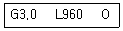
- 건식 게이지 3.0m, 가고 960mm, 압축형
- 파이프 길이 3.0m, 가고 960mm, 인장형
- 건식 게이지 3.0m, 편위 960mm, 압축형
- 파이프 길이 3.0m, 편위 960mm, 인장형
(정답률: 알수없음)
23. 보(Beam)의 처짐과 처짐각에 대한 설명 중 틀린 것은?
- 보가 하중을 받아 변형하였을 때 그 축상의 임의점의 변위에 대한 연직방향의 거리를 처짐이라 한다.
- 탄성곡선상의 한 점에서 그은 접선의 변형 전의 보의 축과 이루는 각을 처짐각이라 한다.
- 처짐이 하향일 때 (-)로 표시한다.
- 처짐각이 시계방향일 때 (+)로 표시한다.
(정답률: 알수없음)
24. 전기차 집전장치가 직접 접촉하여 전력을 공급받는 전차선의 허용장력을 계산할 때 표준장력 1400kgf 인 전차선 원형 170mm2의 마모 한도(잔존 지름)는 몇 ㎜인가?
- 7
- 7.5
- 8
- 8.5
(정답률: 알수없음)
25. 전차선로용으로 사용하는 철주가 아닌 것은?
- 강관주
- H형강주
- 사각철주
- Y형강주
(정답률: 알수없음)
26. 지선은 일반적으로 전주에 작용하는 수평하중의 몇 %를 부담하는가?
- 50
- 75
- 100
- 125
(정답률: 알수없음)
27. 문형 고정빔 중 내하중이 가장 큰 것은?
- 평형 트러스빔
- 4각 트러스라엔빔
- V형 트러스라엔빔
- V형 트러스빔
(정답률: 알수없음)
28. 전기철도구조물을 시설할 떄 배전용 완철의 시설방법으로 옳은 것은?
- 인류 및 분기완철은 장력방향과 같은 방향으로 시설한다.
- 철도나 도로를 횡단하는 경우에는 횡단하고자 하는 경간측에 시설한다.
- 보호선용 완철은 장력방향과 같은 방향으로 시설한다.
- 하부 완철은 상부 완철과 동일측에 시설한다.
(정답률: 알수없음)
29. 커티너리 구간의 전기철도 구조물에 사용하는 단독 지지주의 설계하중으로 다음 중 고려하지 않아도 되는 것은?
- 전선의 풍압하중
- 전선의 인장강도
- 가동브래킷의 중량
- 가선 전선의 수평장력
(정답률: 알수없음)
30. 전기철도의 구조물에 대한 다음 설명 중 틀린 것은?
- 정지하고 있는 구조물 또는 부재를 받치는 점을 지점(support)이라 한다.
- 부재와 부재와의 접합점을 강결(rigid piont)이라 한다.
- 구조물을 지지하고 있는 지점에서 생긴 반력을 지점반력이라 한다.
- 부재의 부재력을 구할 수 있을 때를 내적 정정이라 한다.
(정답률: 알수없음)
31. 허용인장응력이 1800kgf/cm2이고, 인장력이 4500kgf인 원형강의 소요 단면적은 몇 cm2인가?
- 2
- 2.5
- 3
- 3.5
(정답률: 알수없음)
32. 다음 중 2차원 구조물은 어느 것인가?
- 쉘(shell, curved surface)
- 아치(arch)
- 샤프트(shaft)
- 인장보(tension beam)
(정답률: 알수없음)
33. 전기철도구조물로 이용되는 단독 지지주의 강도 계산을 위한 설계 조건으로 고려하지 않아도 되는 것은?
- 급전방식과 가선방식
- 사용 전선의 종류와 굵기
- 전선에 가해지는 장력
- 통신선로의 유도장해
(정답률: 알수없음)
34. 정적인 상태에서 가선측정기에 의한 곡선구간의 측정은 어느 곳을 기준으로 하는가?
- 내측 궤조
- 외측 궤조
- 선로 중심
- 내측 궤조의 1/3지점
(정답률: 알수없음)
35. 단독 지지주에서 지지점의 높이가 5.4m인 전차선에 126.7kgf의 수평집중하중이 작용하는 경우, 높이 4m 지지점에서의 전단력은 약 몇 kgf 인가?
- 126.7
- 177.4
- 214.7
- 429.5
(정답률: 알수없음)
36. 전기철도구조물을 설계할 때 특수 개소에서 강도 계산에 이용하는 풍속값은 일반적으로 몇 m/s를 적용하는가? (단, 지역은 3m 이상의 제방, 교량 위, 산, 계곡 등 특히 지형적으로 바람이 모이는 A 하중지구라 한다.)
- 35
- 40
- 45
- 50
(정답률: 알수없음)
37. 그림과 같은 1/4원의 도심의 위치 yo의 값은?
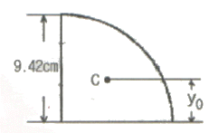
- 2cm
- 3cm
- 4cm
- 6cm
(정답률: 알수없음)
38. 전주의 건식이 곤란한 개소에서 고정빔이나 터널의 천장 아래로 설치하여 가동브래킷, 곡선당김장치 등을 지지하기 위한 것은?
- 완철
- 하수강
- 평행틀
- 전주대용물
(정답률: 알수없음)
39. 가공전차선로에서 지지주간의 경간이 50m이고 부급전선의 지름이 18mm인 경우 부급전선에 선로와 직각방향으로 가해지는 전선의 풍압하중은 몇 kgf 인가? (단, 풍압하중의 수직투영면적당 하중은 100kgf/m2 이다.)
- 80
- 90
- 100
- 110
(정답률: 알수없음)
40. 지선과 전주와의 표준 취부 각도는 몇 도인가?
- 30°
- 35°
- 40°
- 45°
(정답률: 알수없음)
3과목: 전기자기학
41. 그림에서 축전기를 ±Q로 대전한 후 스위치 k를 닫고 도선에 전류 i를 흘리는 순간의 축전기 두 판 사이의 변위전류는?
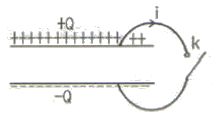
- +Q판에서 -Q판쪽으로 흐른다.
- -Q판에서 +Q판쪽으로 흐른다.
- 왼쪽에서 오른쪽으로 흐른다.
- 오른쪽에서 왼쪽으로 흐른다.
(정답률: 알수없음)
42. 변위전류에 의하여 전자파가 발생되었을 때 전자파의 위상은?
- 변위전류보다 90° 빠르다.
- 변위전류보다 90° 늦다.
- 변위전류보다 30° 빠르다.
- 변위전류보다 30° 늦다.
(정답률: 알수없음)
43. 합성수지(εs=4)중에서의 전자파의 속도는 몇 [m/s]인가? (단, μs=1이다.)
- 1.5×107
- 1.5×108
- 3×107
- 3×108
(정답률: 알수없음)
44. 진공내에서 전위함수가 V=x2+y2과 같이 주어질 때 점(2,2,0)[m]에서 체적전하밀도 ρ는 몇 [C/m3]인가? (단, εo는 자유공간의 유전율 이다.)
- -4εo
- -2εo
- 4εo
- 2εo
(정답률: 알수없음)
45. 극판의 면적이 4cm2, 정전용량이 1pF인 종이콘덴서를 만들려고 한다. 비유전율 2.5, 두께 0.01mm의 종이를 사용하면 종이는 약 몇 장을 겹쳐야 되겠는가?
- 87장
- 100장
- 250장
- 886장
(정답률: 알수없음)
46. 자기모멘트 9.8×10-5Wbㆍm의 막대자석을 지구자계의 수평성분 12.5 AT/m의 곳에서 지자기 자오면으로부터 90° 회전시키는데 필요한 일은 약 몇 [J]인가?
- 1.23×10-3
- 1.03×10-5
- 9.23×10-3
- 9.03×10-5
(정답률: 알수없음)
47. 자기인덕턴스 L[H]인 코일에 I[A]의 전류를 흘렸을 때 코일에 축적되는 에너지 W[J]와 전류 I[A]사이의 관계를 그래프로 표시하면 어떤 모양이 되는가?
- 직선
- 원
- 포물선
- 타원
(정답률: 알수없음)
48. 다음 사항 중 옳지 않은 것은?
- 전계가 0이 아닌 곳에서는 전력선과 등전위면은 직교한다.
- 정전계는 정전에너지가 최소인 분포이다.
- 정전대전상태에서는 전하는 도체표면에만 분포한다.
- 정전계 중에서 전계의 선적분은 적분경로에 따라 다르다.
(정답률: 알수없음)
49. 평행판 공기콘덴서의 양극판에 +ρ[cm2], -ρ[cm2]의 전하가 충전되어 있을 떄, 이 두 전극사이에 유전율 ε[F/m]인 유전체를 삽입한 경우의 전계의 세기는 몇 [V/m] 인가? (단, 유전체의 분극전하밀도를 +ρp[cm2]-ρp[cm2]라 한다.)
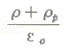
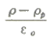
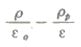
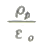
(정답률: 알수없음)
50. 유전체 내의 전계의 세기 E와 분극의 세기 P와의 관계를 나타내는 식은? (단, εo는 자유공간의 유전율이며, εs는 상대유전상수이다.)
- P=εo(εs-1)E
- P=εoεsE
- P=εs(εo-1)E
- P=ε(εs-1)E
(정답률: 알수없음)
51. 그림과 같이 비투자율 μt=1000, 단면적 10cm2, 길이 2m인 환상철심이 있을 때, 이 철심에 코일을 2000회 감아 0.5A의 전류를 흘릴 때의 철심내 자속은 몇 [Wb] 인가?
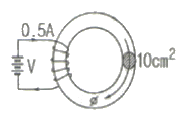
- 1.26×10-3
- 1.26×10-4
- 6.28×10-3
- 6.28×10-4
(정답률: 알수없음)
52. 공기중에 놓여진 직경 2m의 구도체에 줄 수 있는 최대 전하는 약 몇 [C] 인가? (단, 공기의 절연내력은 3000kV/m 이다.)
- 5.3×10-4
- 3.33×10-4
- 2.65×10-4
- 1.67×10-4
(정답률: 알수없음)
53. 임의의 단면을 가진 2개의 원주상의 무한히 긴 평행도체가 있다. 지금 도체의 도전율을 무한대라고 하면 C, L, ε 및 μ 사이의 관계는? (단, C는 두 도체간의 단위길이당 정전용량, L은 두 도체를 한개의 왕복회로로 한 경우의 단위길이당 자기인덕턴스, ε은 두 도체사이에 있는 매질의 유전율, μ는 두 도체사이에 있는 매질의 투자율이다.)
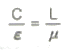
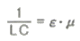
- LC=εㆍμ
- Cㆍε=Lㆍμ
(정답률: 알수없음)
54. 비투자율 350인 환상철심 중의 평균자계의 세기가 280A/m일 때 자화의 세기는 약 몇 [Wb/m2]인가?
- 0.12Wb/m2
- 0.15Wb/m2
- 0.18Wb/m2
- 0.21Wb/m2
(정답률: 알수없음)
55. 강자성체의 히스테리시스 루프의 면적은?
- 강자성체의 단위 체적당의 필요한 에너지이다.
- 강자성체의 단위 면적당의 필요한 에너지이다.
- 강자성체의 단위 길이당의 필요한 에너지이다.
- 강저성체의 전체 체적의 필요한 에너지이다.
(정답률: 알수없음)
56. 자기모멘트 M[Wbㆍm]인 막대자석이 평등자계 H[A/m]내에 자계의 방향과 θ의 각도로 놓여 있을 때 이것에 작용하는 회전력 T[Nㆍm/rad]는?
- MH cosθ
- MH sinθ
- MH tanθ
- MH cotθ
(정답률: 알수없음)
57. 옴의 법칙(Ohm's law)을 미분형태로 표시하면? (단, i는 전류밀도이고, ρ는 저항율, E는 전계이다.)
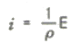
- i=ρE
- i= div E
- i= ∇E
(정답률: 알수없음)
58. 유전율 ε1[F/m], ε2[F/m]인 두 유전체가 나란히 접하고 있고, 이 경계면에 나란히 유전체 ε1[F/m] 내에 거리 r[m]인 위치에 선전하 밀도 λ[c/m]인 선상 전하가 있을 때, 이 선전하와 유전체 ε2간의 단위길이당의 작용력은 몇 [N/m]인가?
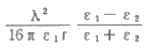
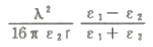
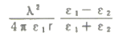
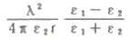
(정답률: 알수없음)
59. 정전계에서 도체의 성질을 설명한 것 중 옳지 않은 것은?
- 전하는 도체의 표면에서만 존재한다.
- 대전된 도체는 등전위면이다.
- 도체 내부의 전계는 0 이다.
- 도체 표면상에서 전계의 방향은 모든 점에서 표면의 접선 방향이다.
(정답률: 알수없음)
60. 다음 ( ㉠ ), ( ㉡ )에 알맞은 것은?
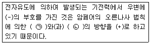
- ㉠ 전압 ㉡ 전류
- ㉠ 전압 ㉡ 자속
- ㉠ 전류 ㉡ 자속
- ㉠ 자속 ㉡ 인덕턴스
(정답률: 알수없음)
4과목: 전력공학
61. 1대의 주상변압기에 역률(늦음) cosθ1, 유효전력 P1[kW]의 부하와 역률(늦음) cosθ2, 유효전력 P2[kW]의 부하가 병렬로 접속되어 있을 경우 주상변압기에 걸리는 피상전력은 어떻게 나타내는가?
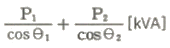
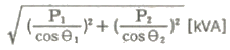
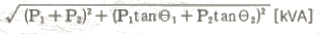
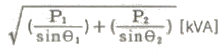
(정답률: 알수없음)
62. 3상 4선식 배전방식에서 1선당의 최대전력은? (단, 상전압 : V, 선전류 : I라 한다.)
- 0.5VI
- 0.57VI
- 0.75VI
- 1.0VI
(정답률: 알수없음)
63. 154/22.9kV, 40MVA인 3상변압기의 %리액턴스가 14%라면 1차측으로 환산한 리액턴스는 약 몇 [Ω]인가?
- 5Ω
- 18Ω
- 83Ω
- 560Ω
(정답률: 알수없음)
64. 환상선로의 단락보호에 사용하는 계전방식은?
- 비율차동계전방식
- 방향거리계전방식
- 과전류계전방식
- 선택접지계전방식
(정답률: 알수없음)
65. 전력계통의 전압조정과 무관한 것은?
- 발전기의 조속기
- 발전기의 전압조정장치
- 전력용콘덴서
- 전력용 분로리액터
(정답률: 알수없음)
66. 그림은 유입차단기(탱크형)의 구조도 이다. A의 명칭은?
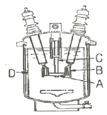
- 절연 liner
- 승강간
- 가동 접촉자
- 고정 접촉자
(정답률: 알수없음)
67. 3상 송전선로에서 선간단락이 발생하였을 때 다음 중 옳은 것은?
- 정상전류와 역상전류가 흐른다.
- 정상전류, 역상전류 및 영상전류가 흐른다.
- 역상전류와 영상전류가 흐른다.
- 정상전류와 영상전류가 흐른다.
(정답률: 알수없음)
68. 송전계통의 중성점 접지용 소호리액터의 언덕턴스 L은? (단, 선로 한 선의 대지정전용량을 C라 한다.)
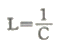
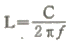
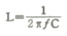
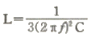
(정답률: 알수없음)
69. 직접 접지 방식에 대한 설명으로 옳지 않은 것은?
- 변압기 절연이 낮아진다.
- 지락전류가 커진다.
- 지락고장시의 중성점 전위가 높다.
- 통신선의 유도장해가 크다.
(정답률: 알수없음)
70. 루프(loop)배전방식에 대한 설명으로 옳은 것은?
- 전압강하가 적은 이점이 있다.
- 시설비가 적게 드는 반면에 전력손실이 크다.
- 부하밀도가 적은 농ㆍ어촌에 적당하다.
- 고장시 정전범위가 넓은 결점이 있다.
(정답률: 알수없음)
71. 역율 0.8(지상)의 2800kW 부하에 전력용콘덴서를 병렬로 접속하여 합성역률을 0.9로 개선하고자 할 경우, 필요한 전력용콘덴서의 용량은 약 몇 [kVA] 인가?
- 372kVA
- 558kVA
- 744kVA
- 1116kVA
(정답률: 알수없음)
72. 수압철관의 안지름이 4m인 곳에서의 유속이 4m/s이었다. 안지름이 3.5m인 곳에서의 유속은 약 몇 [m/s]인가?
- 4.2m/s
- 5.2m/s
- 6.2m/s
- 7.2m/s
(정답률: 알수없음)
73. 송전선로의 코로나 임계전압이 높아지는 경우가 아닌 것은?
- 상대 공기밀도가 적다.
- 전선의 반지름과 선간거리가 크다.
- 날씨가 맑다.
- 낡은 전선을 새 전선으로 교체하였다.
(정답률: 알수없음)
74. 피뢰기의 충격방전 개시전압은 무엇으로 표시하는가?
- 직류전압의 크기
- 충격파의 평균치
- 충격파의 최대치
- 충격파의 실효치
(정답률: 알수없음)
75. 다음 중 부하전류의 차단능력이 없는 것은?
- 단로기
- 가스차단기
- 유입개폐기
- 진공차단기
(정답률: 알수없음)
76. 파동 임피던스 Z1=500Ω인 선로의 종단에 파동 임피던스 Z2=1000Ω의 변압기가 접속되어 있다. 지금 선로에서 파고 ei=600kV의 전압이 진입할 경우, 접속점에서의 전압의 반사파 파고는 몇 [kV]인가?
- 200kV
- 300kV
- 400kV
- 500kV
(정답률: 알수없음)
77. 단상 2선식(110[V]) 저압 배전선로를 단상 3선식(110/220[V]으로 변경하였을 때 전선로의 전압 강하율은 변경전에 비해서 어떻게 되는가? (단, 부하용량은 변경 전후에 같고 역률을 1.0이며 평형부하 이다.)
- 1/4로 된다.
- 3/1로 된다.
- 1/2로 된다.
- 변하지 않는다.
(정답률: 알수없음)
78. 송전선로의 페란티 효과에 관한 설명으로 옳지 않은 것은?
- 송전선로에 충전전류가 흐르면 수전단 전압이 송전단 전압보다 높아지는 현상을 말한다.
- 페란티 효과를 방지하기 위하여 선로에 분로리액터를 설치한다.
- 장거리 송전선로에서 정전용량으로 인하여 발생한다.
- 페란티 현상을 방지하기 위해서는 진상 무효전력을 공급하여야 한다.
(정답률: 알수없음)
79. 어느 기력발전소에서 40000kWh를 발전하는데 발열량 860kcal/kg의 석탄이 60톤 사용된다. 이 발전소의 열효율은 몇 약 [%] 인가?
- 56.7%
- 66.7%
- 76.7%
- 86.7%
(정답률: 알수없음)
80. 기력발전소의 열사이클 중 재열 사이클에서 재열기로 가열하는 것은?
- 증기
- 공기
- 급수
- 석탄
(정답률: 알수없음)